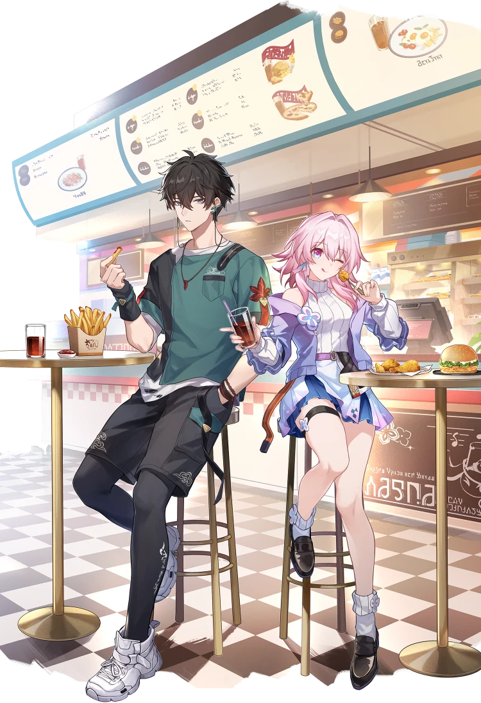

Welcome to Hoyo Knights' official website! | A fan-made & fan-run club!
Friday, November 20th
5:30 PM - 8:00 PM
UCF Main Campus | Lake Claire Recreation Area | Outside
Group Gaming Sessions | Group Discussions | Character Builds | Play Throughs | Watch Alongs | Social Events | and More!
Join us for an night of fun and food! We're having our own tailgate with RPG Knights and the Sanrio Appreciation Club! We're celebrating RPG Knights reaching 300+ members AND the end of the fall semester!
VP Justin will bring the meat and grill. Members are asked to bring in dishes (homemade or store bought), Drinks, Role-Playing, Board and Card Games, and Disposible Utensiles and plates.
This event will be outside, so please dress accordingly! Check the weather beforehand!

This image depicts characters from Honkai: Star Rail, owned by HoYoverse (COGNOSPHERE). No official affiliation or endorsement implied.